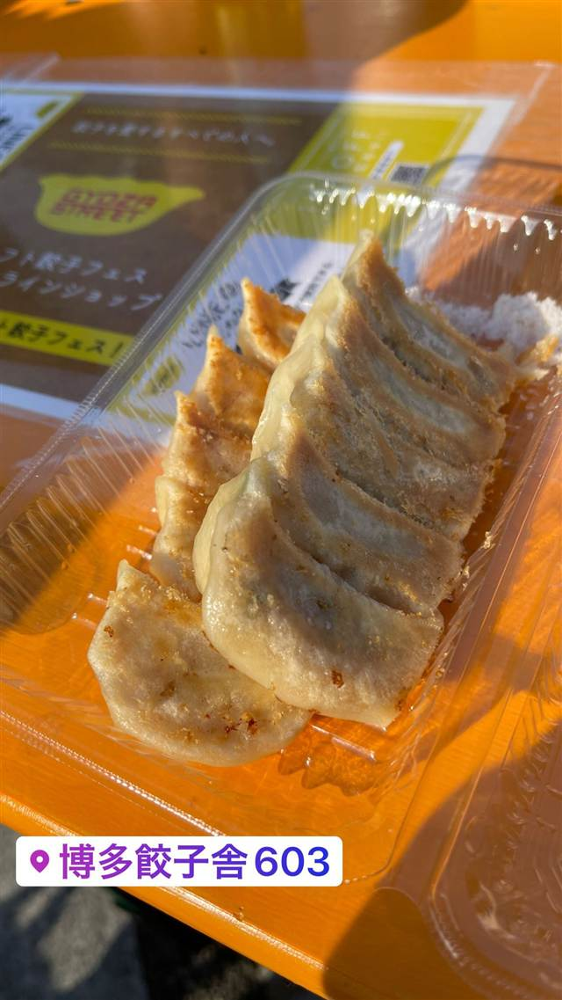

博多餃子舎603 渋谷店
博多発、冷めてもおいしい一口餃子と塩もつ鍋
博多餃子舎603
30年の経験を持つ職人が生んだ博多の一口餃子を全国に広めるべく2013年から多店舗展開を始めたチェーン。パリパリ・もちもちの食感の一口餃子と塩もつ鍋が名物。
TRIVIA
豆知識
- 2013年から博多発祥の一口餃子を広めるべく全国出店を開始した
- 看板の一口餃子は冷めてもおいしいのが売り
REVIEWS
世間の評判
3.09食べログ
こだわり餃子と〆の焼きラーメン
- 九州産黒豚と産地直送野菜を使ったこだわり餃子を評価する声が多い
- 渋谷駅近くでコスパよく飲めると評価する声がある
- 全席喫煙可でたばこの煙が気になったという声もある
- テーブルに料理が乗り切らないほど席が狭いという指摘もある
食べログ
| 系譜 | 福岡・博多で30年の経験を持つ職人が生み出した「博多じゅんじょう一口餃子」が発祥。2013年から全国への多店舗展開を開始した。 |
|---|---|
| 看板 | 博多じゅんじょう一口餃子（冷めてもおいしい一口サイズ） |
| こだわり | 厳選した豚肉・皮・野菜を試行錯誤で配合した博多伝統の一口餃子で、パリパリ・もちもちの食感とうま味が特徴。塩もつ鍋も博多名物として提供する。 |
| どこから | 都心 |
| 予算 | 夜 ¥2,000～¥2,999 |
| 場所 | 渋谷 東京都渋谷区道玄坂2-7-1 |
| メモ | 渋谷店は道玄坂、渋谷マークシティ近く。全国にフランチャイズ展開している。 |
食べたもの：餃子(フェス)
NEARBY
近い店・同じ系統の店
-
 パスタ 渋谷
KURA 渋谷店
元プロゴルファーら異業種出身者が始めた、もちもち生パスタ50種以上
昼 ¥1,000～¥1,999 夜 ¥2,000～¥2,999
パスタ 渋谷
KURA 渋谷店
元プロゴルファーら異業種出身者が始めた、もちもち生パスタ50種以上
昼 ¥1,000～¥1,999 夜 ¥2,000～¥2,999
-
 ベトナム 渋谷駅
ミス・サイゴン（MISS SAIGON）
ベトナム人スタッフが作る野菜たっぷりのフォーとバインセオ
夜 ～¥5,999
ベトナム 渋谷駅
ミス・サイゴン（MISS SAIGON）
ベトナム人スタッフが作る野菜たっぷりのフォーとバインセオ
夜 ～¥5,999
-
 台湾 恵比寿
七一飯店
週1回だけの営業だった名残の店名、看板は魯肉飯
昼 ¥1,000～¥1,999 夜 ¥1,000～¥1,999
台湾 恵比寿
七一飯店
週1回だけの営業だった名残の店名、看板は魯肉飯
昼 ¥1,000～¥1,999 夜 ¥1,000～¥1,999
-
 コーヒー 渋谷
Café Kitsuné Shibuya
パリ発ブランドのカフェ、狐にちなむ名を持つバゲットサンド
昼 ¥1,000～¥1,999 夜 ¥1,000～¥1,999
コーヒー 渋谷
Café Kitsuné Shibuya
パリ発ブランドのカフェ、狐にちなむ名を持つバゲットサンド
昼 ¥1,000～¥1,999 夜 ¥1,000～¥1,999
-
 コーヒー 渋谷駅
Roasted COFFEE LABORATORY 渋谷神南店
店内焙煎の豆で淹れる「MADE IN SHIBUYA」のコーヒー
昼 ¥1,000～¥1,999 夜 ¥1,000～¥1,999
コーヒー 渋谷駅
Roasted COFFEE LABORATORY 渋谷神南店
店内焙煎の豆で淹れる「MADE IN SHIBUYA」のコーヒー
昼 ¥1,000～¥1,999 夜 ¥1,000～¥1,999
-
 カフェ 渋谷
JINNAN CAFE 渋谷店
ドラマや映画のロケ地に頻繁に使われるとろけるスフレパンケーキ
昼 ¥1,000～¥1,999 夜 ¥1,000～¥1,999
カフェ 渋谷
JINNAN CAFE 渋谷店
ドラマや映画のロケ地に頻繁に使われるとろけるスフレパンケーキ
昼 ¥1,000～¥1,999 夜 ¥1,000～¥1,999